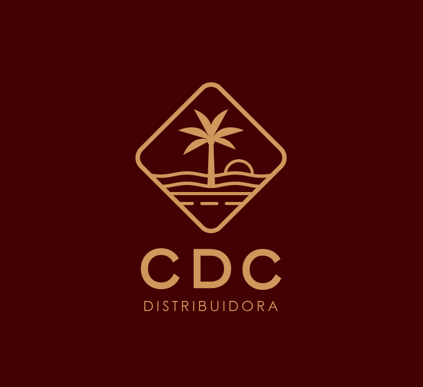
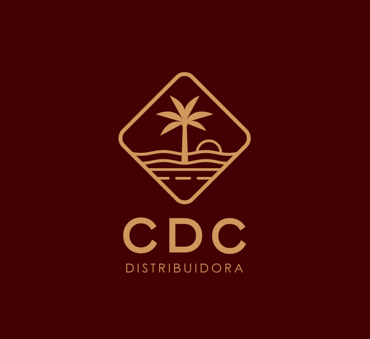

Sua Rota no Mundo dos Vinhos

A Origem de Uma Paixão
UMKAL não é apenas uma marca de vinhos; é uma história de amor que se desenrola entre as nuvens e as vinhas. Nascida da paixão de uma aviadora que, a cada voo para Santiago, se apaixonava mais profundamente pela cultura chilena, UMKAL é a personificação de uma jornada que une os céus à terra.
"Entre o Pacífico e os Andes, descobri não apenas vinhos excepcionais, mas uma conexão profunda com a terra e seu povo." - Fundadora da UMKAL

O Significado Por Trás do Nome
UMKAL é uma das "posições no céu" que guiam os aviões em suas rotas, conhecidos como waypoints pelos pilotos. Este ponto serve como referência para prosseguir na chegada em Santiago ou retornar para Mendoza, na Argentina.

Precisão, Aventura e Conexão
Assim como os pilotos usam UMKAL como uma referência para tomadas de decisão, nossa marca se compromete com a excelência em cada garrafa. A jornada sobre os Andes reflete a beleza e o desafio de fazer vinhos excepcionais.

O Terroir Único: Entre o Céu e a Terra
O que torna os vinhos UMKAL verdadeiramente especiais é o microclima influenciado pela proximidade do Oceano Pacífico e pela majestosa Cordilheira dos Andes. Vinhas centenárias com raízes profundas capturam a essência da terra chilena, irrigadas com a pureza do degelo.

Uma Vista Privilegiada: O Aconcágua
Assim como os passageiros admiram o Aconcágua com 7.000 metros de altitude durante o voo, os apreciadores dos nossos vinhos são levados a uma jornada sensorial pelas alturas do sabor e da qualidade.

Inovação e Tradição
Assim como as tecnologias usadas para uma travessia segura sobre a cordilheira, a UMKAL utiliza uma combinação de tecnologia de ponta e sabedoria tradicional para garantir vinhos de alta qualidade em cada safra.

Pioneirismo: No Ar e na Terra
Inspirados pelo espírito pioneiro de Luis Cenobio Candelaria, o primeiro aviador a cruzar a Cordilheira dos Andes em 1918, a UMKAL busca constantemente inovar, respeitando a tradição e o paladar dos apreciadores de vinho.

Experimente UMKAL
Cada garrafa é uma jornada sensorial que captura a essência dos Andes, a paixão pela aviação e o compromisso com a excelência enológica. Descubra o sabor das alturas com UMKAL.
.png) 
